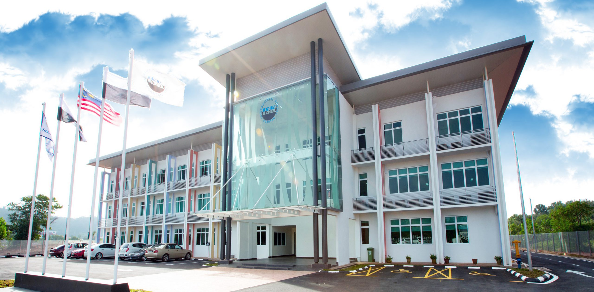
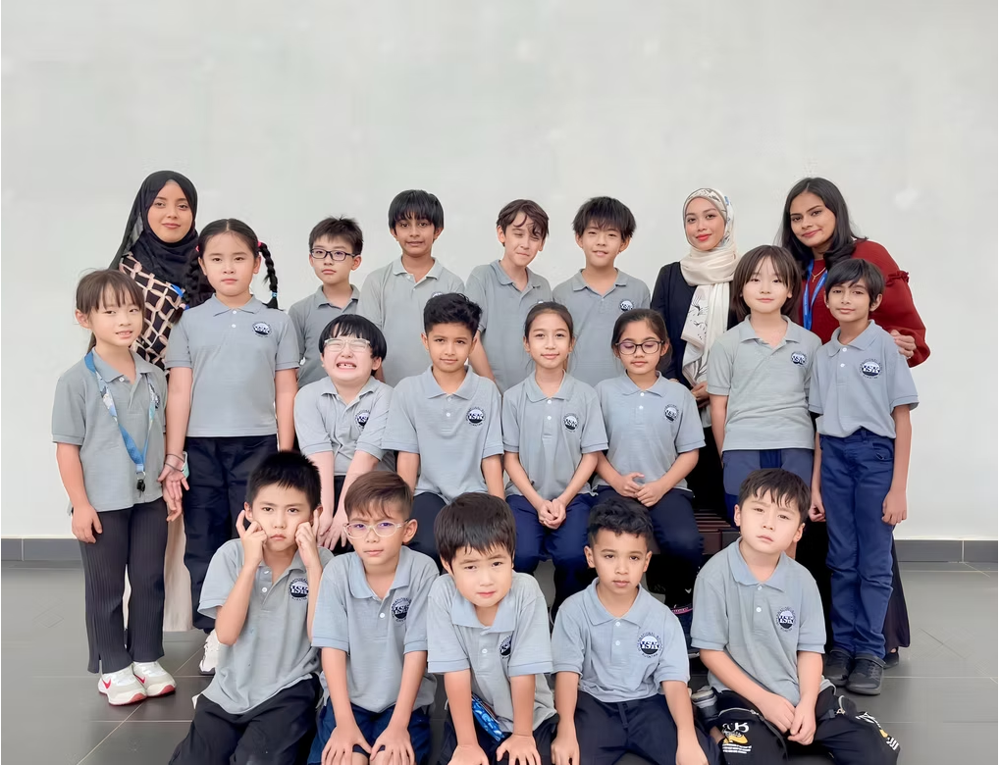

Strategic direction, policy, long-term development, quality assurance, operations, and school growth.

School Identity
An accredited international school with a close community structure.
This page gathers the organisational story: mission, vision, values, accreditation, facilities, school houses, and the teams that support learning.
Mission and Vision
Educational excellence tailored to the individual.
Vision: Educational excellence tailored to the individual in a community of lifelong learning.
Mission: ISK provides holistic education founded on core values while pursuing academic excellence, competency in 21st Century skills, and the development of globally aware citizens.
- Caring
- Leadership
- Initiative
- Passion
- Positive
- Effective
- Respect

Organisation Map
Clear teams around students and families.
Use this as a web-friendly organisation overview. It can later be expanded into a formal chart if ISK wants names, reporting lines, or department pages.
Curriculum, pedagogy, assessment, student progress, English development, and programme quality.
Enquiries, tours, trial classes, placement guidance, partnerships, and family communications.
Daily systems, documentation, staffing, accounting, maintenance, safety, and campus readiness.
Leadership, service, sports, performances, competitions, school spirit, and community experiences.
Local and international relationships, cultural exchange, and student mobility opportunities.
Accreditation
WASC accreditation signals recognised standards and continuous improvement.
WASC accreditation supports confidence in teaching, curriculum, leadership, student-centred learning, and credentials trusted by universities worldwide.
High-quality learning experiences designed around student growth and achievement.
Alignment with international standards for teaching, curriculum, leadership, and school improvement.
A commitment to continuous improvement so education remains relevant, rigorous, and current.
Campus and Houses
Facilities and house culture support a complete school experience.
ISK facilities support learning, performance, technology, sport, and community. Houses strengthen school spirit and cross-grade connection.
Science LabsExperiments, practical investigation, and Cambridge preparation.
Computer LabsDigital literacy, research, projects, and creative technology.
LibraryReading culture, inquiry resources, and independent study.
Music RoomPerformance skills, ensemble practice, and confidence on stage.
Art StudioCreative expression, design thinking, and visual communication.
Outdoor Sports ArenaFitness, discipline, house events, and healthy competition.
Multipurpose HallAssemblies, performances, open days, and graduation evenings.
Hawks, Falcons, EaglesHouse identity, service learning, sportsmanship, and school spirit.